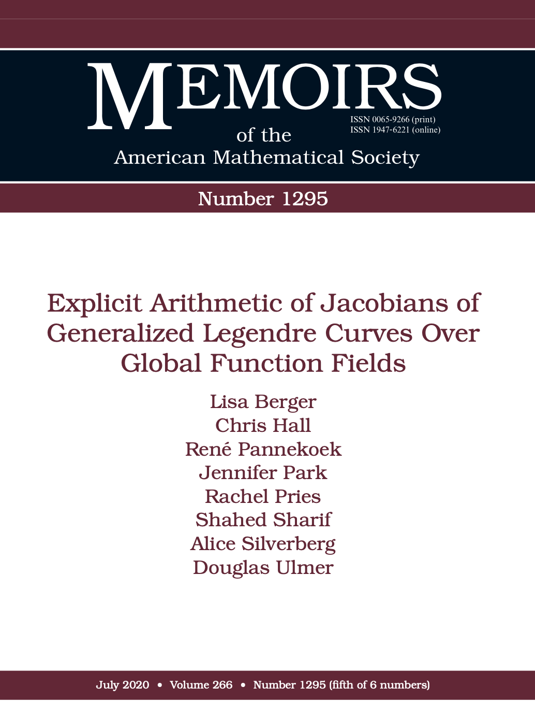
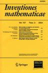
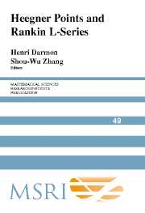
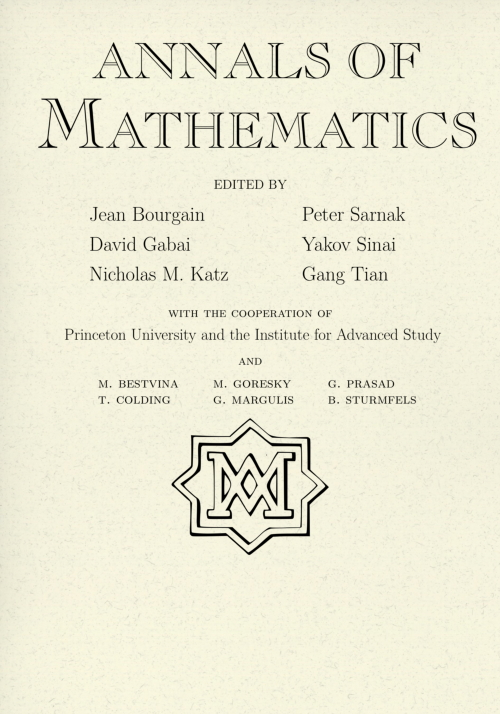
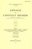
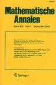
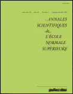
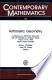
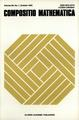

“L'âme d'un vrai philosophe est un champ de bataille, ce n'est pas une monarchie paisible où il n'y a place que pour un seul maître.” (Henri Poincaré)
I work in algebraic geometry and number theory.
Most of my research concerns curves, surfaces, and abelian varieties over finite fields or function fields.
I am also interested in arithmetic over number fields and its interaction with geometry over the complex numbers.
A lot of my early work was on modular forms and the associated Galois representations.
See below for reviews and surveys.
Where available I give a link to a (possibly restricted access) version that should be identical to the print version.
The “local version” is either a pdf file produced from my original TeX files (which might differ slightly from the published version) or a pdf from the publisher.
|
2022: Transversality of sections on elliptic surfaces with applications to elliptic
divisibility sequences and geography of surfaces (with Giancarlo Urzúa)
Selecta Mathematica (N.S.) 28 (2022), Article number 25.
Springer version,
ArXiV version,
local version
We consider elliptic surfaces $\mathcal{E}$ over a field $k$
equipped with zero section $O$ and another section $P$ of infinite
order. If $k$ has characteristic zero, we show there are only
finitely many points where $O$ is tangent to a multiple of $P$.
Equivalently, there is a finite list of integers such that if $n$ is
not divisible by any of them, then $nP$ is not tangent to $O$. Such
tangencies can be interpreted as unlikely intersections. If $k$ has
characteristic zero or $p>3$ and $\mathcal{E}$ is very general, then
we show there are no tangencies between $O$ and $nP$. We apply
these results to square-freeness of elliptic divisibility sequences
and to geography of surfaces. In particular, we construct mildly
singular surfaces of arbitrary fixed geometric genus with $K$ ample
and $K^2$ unbounded.
|
|
2021c: Every $BT_1$ group scheme appears in a Jacobian (with Rachel Pries)
Proceedings of the American Mathematical Society 150 (2021),
525–537.
AMS version,
ArXiV version,
local version
Let $p$ be a prime number and let $k$ be an algebraically closed
field of characteristic $p$. A $BT_1$ group scheme over $k$ is a
finite commutative group scheme which arises as the kernel of $p$ on
a $p$-divisible (Barsotti--Tate) group. Our main result is that
every $BT_1$ group scheme over $k$ occurs as a direct factor of the
$p$-torsion group scheme of the Jacobian of an explicit curve
defined over ${\mathbb F}_p$. We also treat a variant with polarizations.
Our main tools are the Kraft classification of $BT_1$ group schemes,
a theorem of Oda, and a combinatorial description of the de Rham
cohomology of Fermat curves.
|
 |
2021b: On $BT_1$ group schemes and Fermat curves (with Rachel Pries)
New York Journal of Mathematics 27 (2021), 705-739.
NY Journal version,
ArXiV version,
local version
Let $p$ be a prime number and let $k$ be an algebraically closed
field of characteristic $p$. A $BT_1$ group scheme over $k$ is a
finite commutative group scheme which arises as the kernel of $p$ on
a $p$-divisible (Barsotti--Tate) group. We compare three
classifications of $BT_1$ group schemes, due in large part to Kraft,
Ekedahl, and Oort, and defined using words, canonical filtrations,
and permutations. Using this comparison, we determine the
Ekedahl--Oort types of Fermat quotient curves and we compute four
invariants of the $p$-torsion group schemes of these curves.
|
|
2021a: Bounding tangencies of sections on elliptic surfaces (with Giancarlo Urzúa)
International Mathematics Research Notices 2021, 4768-4802.
Oxford University Press version,
ArXiV version,
local version
This is a follow-up to the paper “Transversality of section ...”
(which appeared later) giving an explicit upper bound on a set which was proven
to finite in the earlier paper.
Here is the abstract: Given an elliptic surface $\mathcal{E}\to\mathcal{C}$ over a field
$k$ of characteristic zero equipped with zero section $O$ and
another section $P$ of infinite order, we give a simple and explicit
upper bound on the number of points where $O$ is tangent to a
multiple of $P$.
|
|  |
2020b: Explicit arithmetic of Jacobians of generalized Legendre curves over global function fields
(with Lisa Berger, Chris Hall, René Pannekoek, Jennifer Park, Rachel Pries, Shahed Sharif, and Alice Silverberg)
Memoirs of the American Mathematical Society 266 (2020), no.1295.
AMS version,
ArXiV version,
local version
This paper was a long time in the making! It started as a project at an AIM workshop on
“Cohomological methods in abelian varieties” in March of 2012. A manuscript was
submitted to the Memoirs in May, 2015, and the paper is finally in print. Here is the abstract:
We study the Jacobian $J$ of the smooth projective curve $C$ of
genus $r-1$ with affine model $y^r = x^{r-1}(x + 1)(x + t)$ over the
function field $\mathbb{F}_p(t)$, when $p$ is prime and $r\ge 2$ is an
integer prime to $p$. When $q$ is a power of $p$ and $d$ is a
positive integer, we compute the $L$-function of $J$ over
$\mathbb{F}_q(t^{1/d})$ and show that the Birch and Swinnerton-Dyer
conjecture holds for $J$ over $\mathbb{F}_q(t^{1/d})$. When $d$ is
divisible by $r$ and of the form $p^\nu +1$, and $K_d :=
\mathbb{F}_p(\mu_d,t^{1/d})$, we write down explicit points in $J(K_d)$,
show that they generate a subgroup $V$ of rank $(r-1)(d-2)$ whose
index in $J(K_d)$ is finite and a power of $p$, and show that the
order of the Tate-Shafarevich group of $J$ over $K_d$ is
$[J(K_d):V]^2$. When $r>2$, we prove that the ``new''
part of $J$ is isogenous over $\overline{\mathbb{F}_p(t)}$ to the square of a
simple abelian variety of dimension $\phi(r)/2$ with endomorphism
algebra $\mathbb{Z}[\mu_r]^+$. For a prime $\ell$ with
$\ell \nmid pr$, we prove that $J[\ell](L)=\{0\}$ for any abelian
extension $L$ of $\overline{\mathbb{F}}_p(t)$.
|
 |
2020a: On the arithmetic of a family of twisted constant elliptic curves
( with Richard Griffon)
Pacific Journal of Mathematics 305 (2020), 597-640.
MSP version,
ArXiV version,
local version for screen,
local version for printing
Let $\mathbb{F}_r$ be a finite field of characteristic $p>3$. For any power
$q$ of $p$, consider the elliptic curve $E=E_{q,r}$ defined by $y^2=x^3 + t^q
-t$ over $K=\mathbb{F}_r(t)$. We describe several arithmetic invariants of $E$
such as the rank of its Mordell--Weil group $E(K)$, the size of its
Néron--Tate regulator $\text{Reg}(E)$, and the order of its Tate--Shafarevich
group $III(E)$ (which we prove is finite). These invariants have radically
different behaviors depending on the congruence class of $p$ modulo 6. For
instance $III(E)$ either has trivial $p$-part or is a $p$-group. On the other
hand, we show that the product $|III(E)|\text{Reg}(E)$ has size comparable to
$r^{q/6}$ as $q\to\infty$, regardless of $p\pmod{6}$. Our approach relies on
the BSD conjecture, an explicit expression for the $L$-function of $E$, and a
geometric analysis of the Néron model of $E$.
|
|
2019: On the Brauer-Siegel ratio for abelian varieties over function fields
Algebra and Number Theory 13 (2019), 1069-1120.
MSP version,
ArXiV version,
local version for screen,
local version for printing
Please note a correction linked on the MSP site, included in the arxiv version, and available here.
Hindry proposed an analogue of the classical Brauer-Siegel
theorem for abelian varieties over global fields. Roughly speaking,
it says that the product of the regulator of the Mordell-Weil group
and the order of the Tate-Shafarevich group should have size comparable
to the exponential differential height. Hindry-Pacheco and Griffon
have proved this for certain families of elliptic curves over
function fields using analytic techniques. Our goal in this work is
to prove similar results by more algebraic arguments, namely by a
direct approach to the Tate-Shafarevich group and the regulator. We
recover the results of Hindry-Pacheco and Griffon and extend them to
new families, including families of higher-dimensional abelian
varieties.
|
|
2017b: On the number of rational points on special families of curves over function fields (with José Felipe Voloch)
New Zealand Journal of Mathematics 47 (2017),
1-7.
NZMS version,
ArXiV version,
local version
We construct families of curves which provide counterexamples for a
uniform boundedness question. We show, in detail, what fails
in the argument of Caporaso, Harris, Mazur that uniform boundedness
follows from the Lang conjecture. We also give a direct proof that
these curves have finitely many rational points and give explicit
bounds for the heights and number of such points.
|
|
2017a: Rational curves on elliptic surfaces
Journal of Algebraic Geometry 26 (2017),
357-377.
AMS version,
ArXiV version,
local version
We prove that a very general elliptic surface over the
complex numbers with a section and with geometric genus at least 2
contains no rational curves other than the section and components of
singular fibers. Equivalently, if E is a very general
elliptic curve over C(t) of height at least 3 and if L is a finite extension of
C(t) isomorphic to C(u), then the Mordell-Weil group E(L) is trivial.
|
|
2016b: Arithmetic of abelian varieties in Artin-Schreier extensions (with Rachel Pries)
Transactions of the American Mathematical Society 368 (2016),
8553-8595.
AMS version,
ArXiV version,
local version
We study the arithmetic of certain abelian varieties over global function fields in the system of Artin-Schreier extensions. Findings include examples of unbounded analytic and algebraic ranks, formulae for ranks, new cases of the conjecture of Birch and Swinnerton-Dyer, and explicit points on Jacobians. These results generalize previous findings for the Kummer tower in our papers 2007b, 2013a, and 2014a-c-d.
|
|
2016a: Conductors of \(\ell\)-adic representations
Proceedings of the American Mathematical Society 144 (2016),
2291-2299.
AMS version,
ArXiV version,
local version
We give a new formula for the Artin conductor of an \(\ell\)-adic representation of the Weil group of a local field of residue characteristic \(p\) not equal to \(\ell\).
|
|
2015: Low-dimensional factors of superelliptic Jacobians (with Thomas Occhipinti)
European Journal of Mathematics 1 (2015), 279-285.
Springer version,
ArXiV version,
local version
Correction
We consider superelliptic curves yd=f(x) over the complex numbers with f(x) a polynomial, and we show that if d is sufficiently large, then the “new” part of the Jacobian (new with respect to d) has no small-dimensional factors. This is in marked contrast to what happens over finite fields.
|
|
2014d: Explicit points on the Legendre curve III
Algebra and Number Theory 8 (2014), 2471-2522.
MSP version,
ArXiV version,
local version for screen,
local version for printing
In 2014a, we showed that the Legendre elliptic curve E has a subgroup V of explicit points over suitable extensions K of Fp(t) with large rank and finite, p-power index. In this paper, we compute E(K)/V and the the Tate-Sharevich group of E/K as modules over a group ring Zp[G]. This refines a class number formula according to which the index is the square root of the order of the Tate-Shafarevich group.
|
|
2014c: Explicit points on the Legendre curve II (with Ricardo Conceição and Chris Hall)
Mathematical Research Letters 21 (2014), 261-280.
International Press version,
ArXiV version,
local version
In 2014a, we showed that the Legendre elliptic curve over Fp(t) has high rank over extensions Fq(u) where ud=t and where d divides pf+1 for some f. In this paper, we compute the rank for all d in terms of the combinatorics of the action of multiplication by p on Z/dZ. We find that the rank is large for many more values of d than might be expected.
|
|
2014a: Explicit points on the Legendre curve
Journal of Number Theory
136 (2014), 165-194.
Elsevier version,
ArXiV version,
local version
We give a remarkably elementary construction of an elliptic curve over Fp(t) with explicit points generating a group of arbitrarily large rank.
|
|
2013b: On balanced subgroups of the multiplicative group (with Carl Pomerance)
in “Number Theory and Related Fields
In Memory of Alf van der Poorten”, (Springer Proceedings in Mathematics & Statistics
43) (2013), 253-270.
Springer version,
ArXiV version,
local version
We study the set of layers of the Kummer tower in which the Legendre curve has “new” points.
Surprisingly, the well-known “supersingular” case is not the most frequent.
|
 |
2013a: On Mordell-Weil groups of Jacobians over function fields
Journal of the Institute of Mathematics of Jussieu 12 (2013), 1-29.
Cambridge Press version,
ArXiV version,
local version
We study the arithmetic of abelian varieties over K=k(t) where k is an arbitrary field.
The main result relates Mordell-Weil groups of certain Jacobians over K to homomorphisms of other Jacobians over k.
Our methods also yield completely explicit points on elliptic curves with unbounded rank over Fpalg(t)
and a new construction of elliptic curves with moderately high rank over C(t)$.
|
|
2012: Unboundedness of the number of rational points on curves over function fields (with Ricardo Conceição and Felipe Voloch)
New York Journal of Mathematics 18 (2012), 291-293.
NY Journal version,
ArXiV version,
local version
We give examples of sequences of smooth non-isotrivial curves of every genus at least two,
defined over a rational function field of positive characteristic, such that the (finite) number
of rational points of the curves in the sequence cannot be uniformly bounded.
|
|
2010: Ranks of Jacobians in towers of function fields (with Yuri Zarhin)
Mathematical Research Letters 17 (2010), 637-645.
International Press version,
ArXiV version,
local version
Let k be a field of characteristic zero and let K=k(t) be the rational function field over k.
In this paper we combine a formula for ranks of certain Jacobians over K with strong upper bounds
on endomorphisms of Jacobians to give many examples of higher dimensional, absolutely simple Jacobians
over k(t) with bounded rank in towers k(t1/pr). In many cases we are able to compute
the rank at every layer of the tower.
|
|
2007c: Jacobi sums, Fermat Jacobians, and ranks of abelian
varieties over towers of function fields
Mathematical Research Letters 14 (2007), 453-467.
International Press version,
ArXiV version,
local version
We study several classes of abelian varieties over Fp(t) with bounded ranks in towers
Fq(t1/d) where d varies through powers of a prime or all integers prime to p.
An interesting step along the way is to prove that the new part of the Jacobian of a Fermat curve of sufficiently
large degree has no factors of small dimension. This in turn comes from a result on the distribution of valuations
of Jacobi sums. Correction: In Theorem 5.2, “\ell>3” should be replaced with “\ell>5”. See this note for further discussion.
|
|  |
2007b: L-functions with large analytic rank and abelian varieties with large algebraic rank over function fields
Inventiones Mathematicae 167 (2007), 379-408.
SpringerLink version,
ArXiV version,
local version
The main result of this paper gives a construction of a large class of L-functions over function
fields which have arbitrarily large order of vanishing at the central critical point. We also elaborate on a construction of
a class of Jacobians over function fields (already implicit in [2002]) which satisfy the conjecture of Birch and Swinnerton-Dyer.
Combining the two results gives explicit hyperelliptic curves whose Jacobians have arbitrarily large Mordell-Weil rank. We also prove several
other results about large analytic and algebraic ranks of abelian varieties over function fields.
|
|
2005: Geometric non-vanishing
Inventiones Mathematicae 159 (2005), 133-186.
SpringerLink version, ArXiV version, local version
We prove a very general non-vanishing result for twists of L-functions associated to Galois representations over function fields. The word “geometric” in the title refers to the fact that algebro-geometric techniques play the main role, as opposed to the automorphic techniques usually involved in non-vanishing results. The motivation for considering the question came from applications to the Birch and Swinnerton-Dyer conjecture; in particular, this article reduces the BSD conjecture for elliptic curves over function fields in the case where the L-series vanishes to order at most 1 to a relatively mild version of the Gross-Zagier formula.
|
|  |
2004: Elliptic curves and analogies between number fields and
function fields
in “Heegner points and Rankin
L-series,” MSRI Publications 49 (2004), 285-315.
CUP version at MSRI, ArXiV version, local version
This article is the conjunction
of a survey article on one topic and a research article on another
loosely related topic.
The research part explains some questions related to ranks of elliptic
curves in various towers of fields which were motivated by the last
part of 2002 and well-known analogies. There has since been
interesting work by Silverman, Ellenberg, and others related to the
case of towers of function fields over number fields.
|
|  |
2002: Elliptic curves with large rank over function fields
Annals of Mathematics (2) 155 (2002), 295-315
JSTOR version, ArXiV version, local version
We show the existence of non-isotrivial elliptic curves of arbitrarily large rank over any
function field over a finite field. Except for the “non-isotrivial” this was
shown long before by Tate and Shafarevitch, but the non-isotrivial examples are considered
(by some) to be much more compelling evidence for the analogous question over number fields.
The curves in question show that bounds for ranks in terms of conductors due to Brumer
following Mestre are sharp. Correction: Corollary 5.3 should include the hypothesis that $\tilde{~\varphi}$ is birational.
|
|  |
1996b: Slopes of modular forms and congruences
Annales de l'Institut Fourier 46 (1996), 1-32
Corrigendum, same volume, page 1519
Numdam version, local version, local version of corrigendum,
This paper exploits the results of 1996a to give congruences between forms of level pN and weight > 2 and forms of level 2, including a curious relationship between the leading terms of the p-adic expansions of the Up eigenvalues of the forms which brings in the slope (p-adic valuation) of the higher weight form. This leads to a complete description of the local mod p Galois representation attached to certain non-ordinary forms of higher weight. Barry Mazur suggested, and the author and Breuil confirmed in weight 3 (unpublished), that there is a purely local, Galois representation-theoretic explanation for the latter result.
|
|  |
1996a: On the Fourier coefficients of modular forms II
Mathematische Annalen 304 (1996), 363-422
SpringerLink version, local version
The aim of this paper is to improve the results of 1995a by computing the highest polygon with integer slopes which lies on or below the Newton polygon of the Up operator. The results ultimately boil down to fine information on certain crystalline cohomology groups obtained via cohomology of exact and logarithmic differentials.
|
|
1995b: A construction of local points on elliptic curves over modular curves
International Mathematics Research Notices 1995 (1995), 349-363
Oxford Press version, local version
For the universal elliptic curve E over the function field K of a modular curve over a finite field, this paper constructs a Zp-submodule of the group of local points E(Kv), for a suitable place v, which has rank equal to the order of vanishing of the L-function at s=1 and which contains a finite index subgroup of the global points E(K). It is tantalizing problem to characterize the global points among these explicitly constructed local points, since this would give a completely new construction of global points on elliptic curves over function fields. Many of the ideas of this paper can be transferred to a much more general, non-modular, situation (to be written). The paper also shows that the Birch and Swinnerton-Dyer conjecture implies the semi-simplicity of the action of certain Hecke operators on modular forms of weight 3. Coleman and Edixhoven (Math. Ann. 310) later generalized this, replacing BSD with the Tate conjecture, to higher weights.
|
|  |
1995a: On the Fourier coefficients of modular forms
Annales Scientifiques de l'École Normale Supérieure 28 (1995), 129-160
Numdam version, local version
This paper studies the p-adic valuations of the eigenvalues of the Hecke operator Up on modular forms of level divisible by p and weight between 2 and p+1. The results are stated in terms of Newton and Hodge polygons and they say roughly that the eigenvalues of Up are more divisible by p than one might a priori expect. The results are compatible with, but nowhere near strong enough to prove, conjectures of Gouvea and Mazur on p-adic families of modular forms. Conceptually, the proof is a simple consequence of Scholl's ideas on motives for modular forms and a motivic variant of the Katz conjecture on Newton and Hodge polygons associated to crystalline cohomology, but there are messy technical difficulties related to the cusps which are resolved using log schemes.
|
|  |
1994: Slopes of modular forms
in “Arithmetic Geometry,” Contemporary Mathematics 174 (1994), 167-183
AMS page for the volume, local version
Although it appeared earlier, this paper is a continuation of 1995a and 1996a. It extends the results of 1995a to all weights and explains what is needed to do the same for 1996a. This would be enough to prove conjectures of Gouvea and Mazur on the number of eigenforms whose Up eigenvalue has a given p-adic valuation.
|
|  |
1993: Curves of genus ten on K3 surfaces (with Fernando Cukierman)
Compositio Mathematica 89 (1993), 81-90
Numdam version, local version
J. Wahl proved that if a curve C admits an embedding into a K3 surface, then its Gaussian map (taking pairs of holomorphic 1-forms to sections of the tri-canonical bundle) fails to be surjective. In this paper, we prove the converse for curves of genus 10 (the first interesting case). A key point is a partial computation of the classes in the Picard group of the moduli space of the divisor of curves where the Gaussian map is not surjective and the divisor of curves embeddable in a K3. A more complete calculation of the latter class was recently carried out by Farkas and Popa (J. Alg. Geom. 14), leading to a counterexample to the Harris-Morrison slope conjecture.
|
|
1991: p-descent in characteristic p
Duke Mathematical Journal 62 (1991), 237-265
scanned pdf at Project Euclid,
local version
Correction
The first part of the paper is devoted to computing the Selmer group for the
multiplication-by-p isogeny on an elliptic curve over a global field of characteristic p
in terms of the arithmetic (differentials and the Cartier operator, p-torsion in the
Jacobian) of the base curve. Ultimately a rather detailed knowledge of the group scheme
Ker(p) is required. In the second part of the paper, these tools are applied to the
universal elliptic curve over an Igusa curve studied in 1990a. Elements of the Selmer
group predicted by the L-function computation of 1990a and the BSD conjecture are
constructed using modular forms modulo p.
|
 |
1990b: L-functions of universal elliptic curves over Igusa curves
American Journal of Mathematics 112 (1990), 687-712
scanned pdf at JSTOR, local version
This paper gives a computation of the Hasse-Weil L-function of powers of the universal elliptic curve over the function field of an Igusa curve in terms of modular forms. In 1990a this type of result was proven using “point counting” and the trace formula whereas this paper uses étale cohomology and results of Katz and Mazur to obtain a much more general statement. A definition of the Hecke operator Up for primes p dividing the level is given which has seen other uses (e.g., Faltings-Jordan, Israel J. Math. 90).
|
|
1990a: On universal elliptic curves over Igusa curves
Inventiones Mathematicae 99 (1990), 377-391
SpringerLink version, local version
Igusa curves appear naturally as components of the reduction of modular curves at primes dividing the level. This paper studies the arithmetic of the universal elliptic curve over an Igusa curve, viewed as an elliptic curve over the function field of the base curve. In particular, its Hasse-Weil L-function is computed in terms of modular forms and a systematic source of zeroes of the L-function is exhibited. Other arithmetic invariants of the universal curve are computed and in some cases the Birch and Swinnerton-Dyer conjecture is verified. To date, there is no known construction of the systematic supply of rational points predicted by the L-function computation and the BSD conjecture.
|